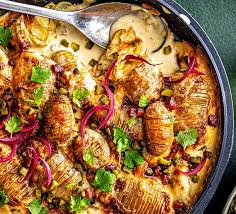

Home
Hasselback Roast Potatoes

Description
Hasselback roast potatoes are potatoes sliced thinly but not cut all the way through, creating a fan-like shape.
They are roasted with butter, oil, and herbs, making them crispy outside and soft inside.
This dish is popular for its crunchy texture and attractive presentation.
Ingredients
- Potatoes (medium size)
- Butter or olive oil
- Garlic (chopped)
- Salt
- Black pepper
- Herbs (rosemary or thyme)
- Cheese (optional)
- Chili flakes (optional)
Steps
- Wash and peel the potatoes
- Cut thin slices on the potatoes (do not cut fully)
- Apply butter or oil with garlic and salt
- Place potatoes on a baking tray
- Bake in oven until crispy and golden
- Serve hot